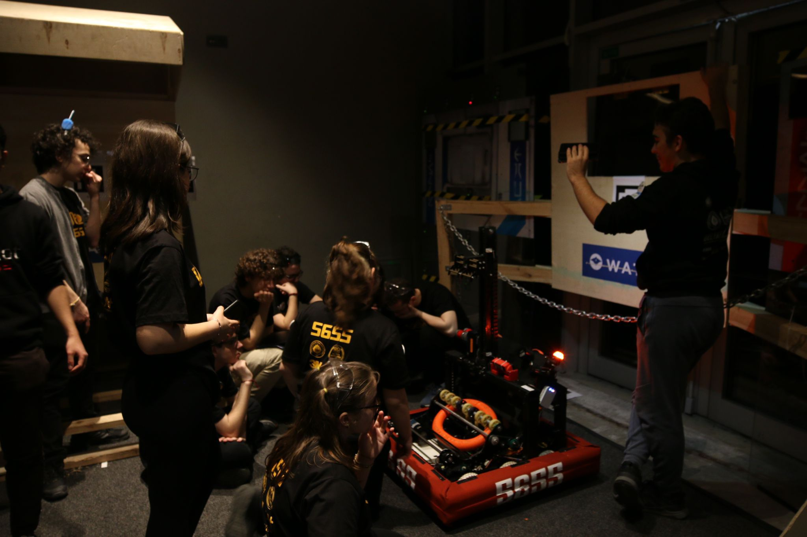
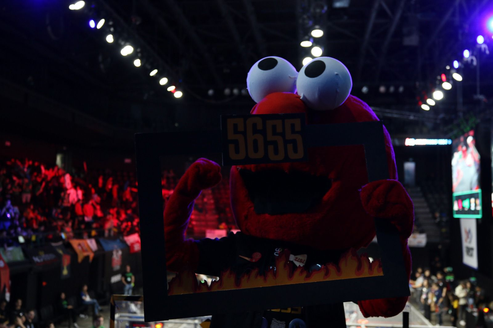
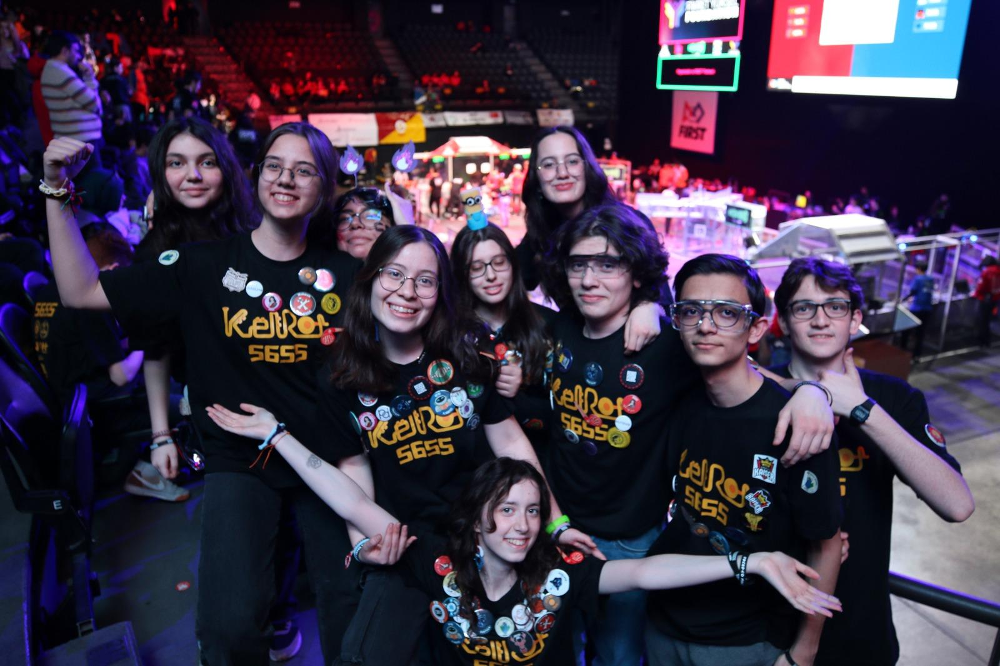
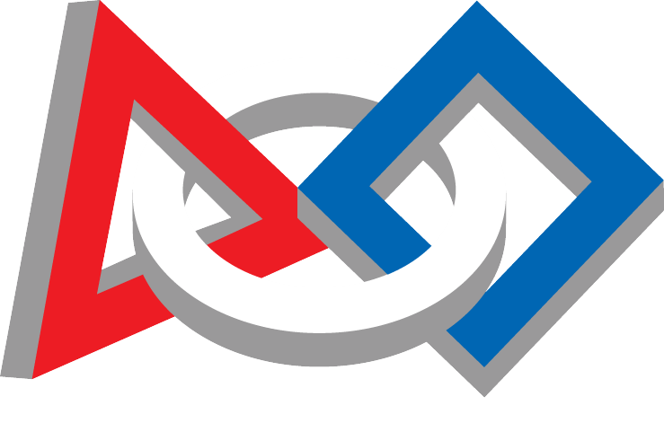
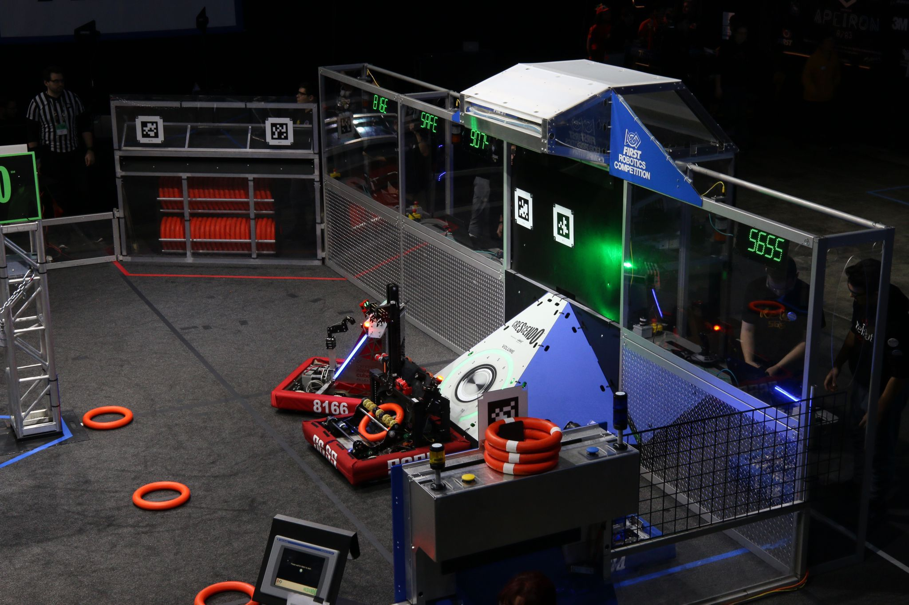
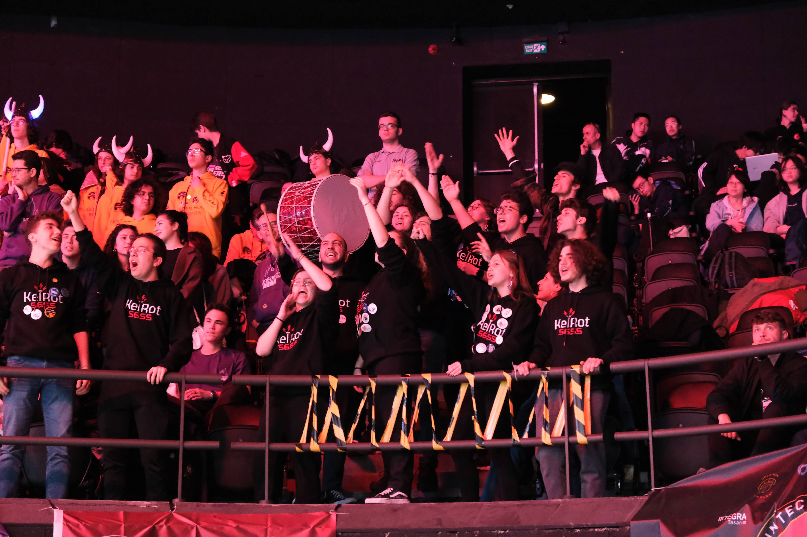
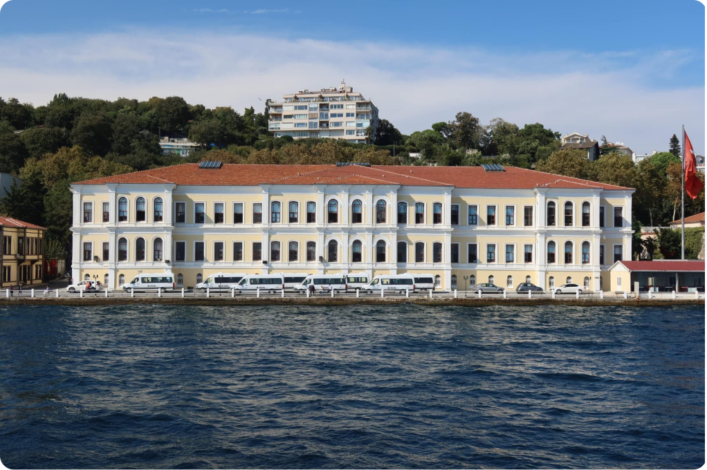
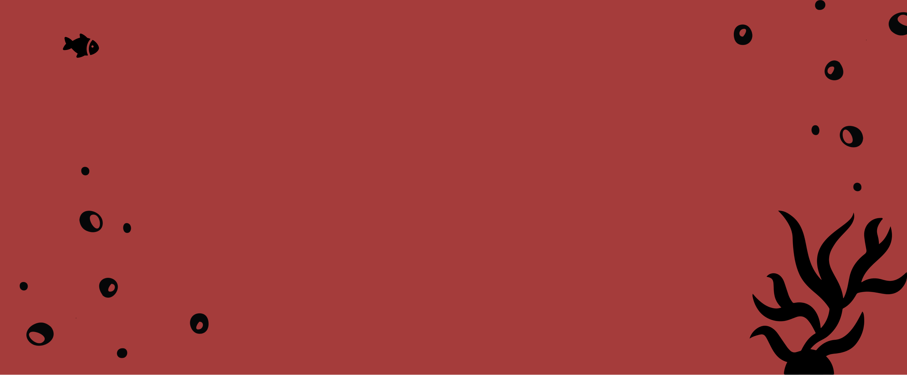

FRC, First Robotics Competition, FIRST vakfı tarafından her sene düzenlenen bir robotik yarışmasıdır. FRC, bilim ve teknolojiyi sporun heyecanı ile birleştirir ve öğrencilerin STEM alanında kendilerini geliştirmesini sağlar.
FIRST vakfı her sene yeni bir oyun temasını tanıtır ve takımlara oyundaki görevleri tamamlayan robotlar yapmaları için 6 haftalık bir süre verirler. Bölgesel yarışmalarda takımlar birbirleri ile üçlü ittifaklar oluşturarak, Amerika’da yapılan FRC şampiyonasına katılmak için hak kazanmaya çalışırlar.

KelRot 5655, 2015 yılında Kabataş Erkek Lisesi öğrencileri tarafından kurulan ve FIRST tarafından atanan 5655 numarasıyla tanınan FRC robotik takımıdır. Kuruluş yılında Amerika'da düzenlenen Silicon Valley Regional’da Rookie All Star ödülünü kazanarak büyük bir başarı elde etmiştir.Türkiye’de kurulan 6. FRC takımı olarak, FRC kültürünün Türkiye’de gelişmesinde ve yeni takımların oluşmasında önemli bir rol oynamış, 2020 yılında İstanbul Regional'da şampiyon olarak Amerika'ya gitmeye hak kazanmıştır.

Kabataş Erkek LisesiOkulumuz, Kabataş Erkek Lisesi Osmanlı Sultanı 2. Abdülhamid tarafından 1908 yılında kurulmuştur. Kabataş Erkek Lisesi Balkan Savaşları sırasında birçok öğrencisini cepheye göndermiş ve bu nedenle o yıllarda okulumuz mezun verememiştir. İlk yıllarında sadece erkeklere özel bir okul olsa da 1994’ten itibaren kız öğrencileri de alınmaya başlanmıştır.
Kabataş Erkek Lisesi aynı zamanda Türkiye’nin en prestijli okullarından biridir ve hiç şüphesiz büyüleyici bir manzarası vardır. İstanbul Boğazı’nın kıyısında yer alan okulumuz prestijiyle, sponsor olabilecek firmaların dikkatini çeker. Takım üyelerimiz de firmaları işbirliğine ikna etmek için okulumuzun ününü vurgular.
